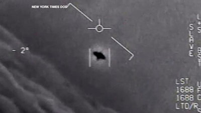

Incident Nimitz (2004)
Observation dite Tic Tac par des pilotes de chasse avec support de capteurs navals.

Chronologie rapide
- Novembre 2004: activite aerienne inhabituelle detectee lors d exercices navals.
- Interception visuelle par des pilotes du groupe aeronaval du USS Nimitz.
- Diffusion publique ulterieure de temoignages et sequences video associees.
Pistes d analyse
Comparer la coherence entre traces capteurs, recits pilotes et contexte operationnel.